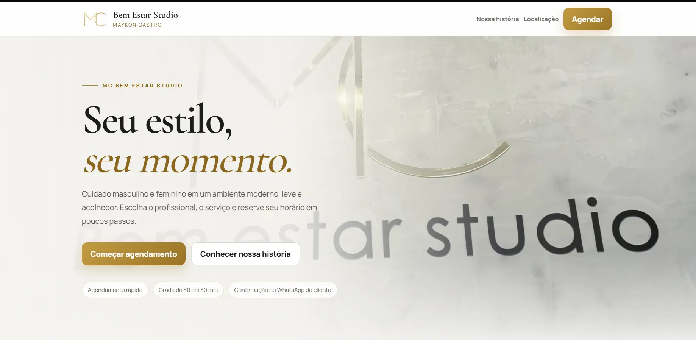
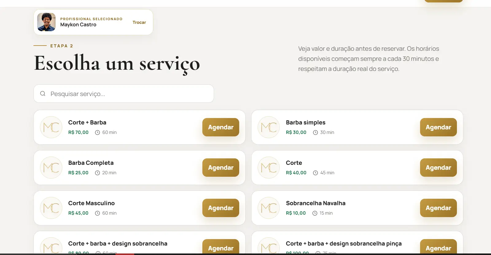
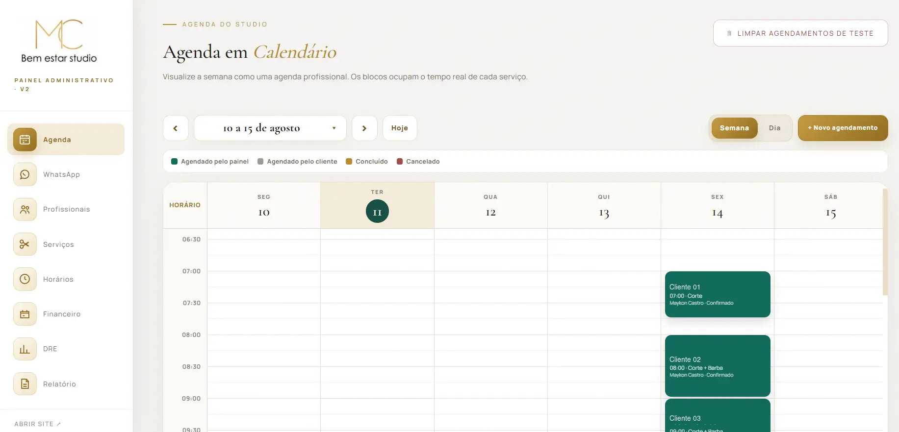
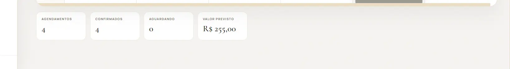
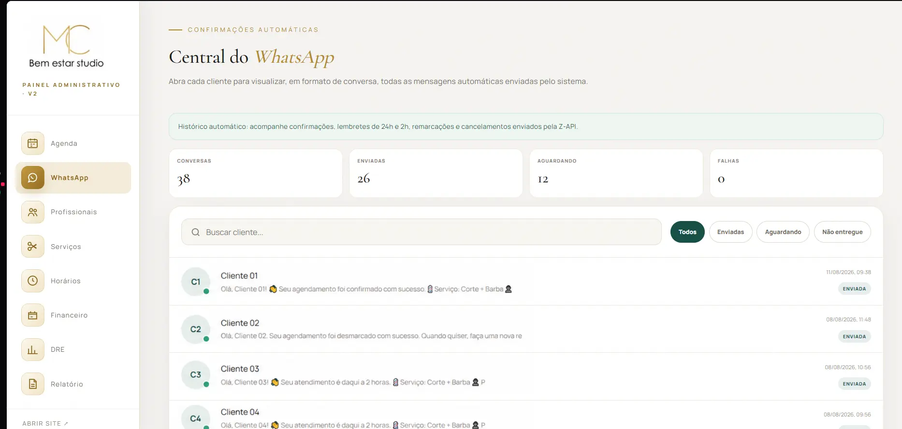
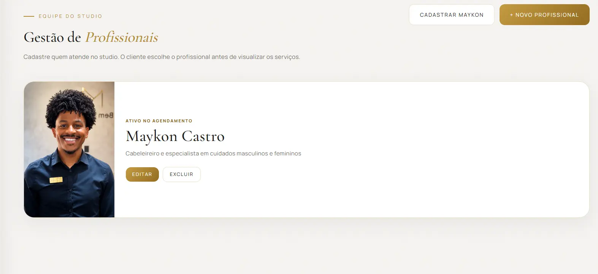
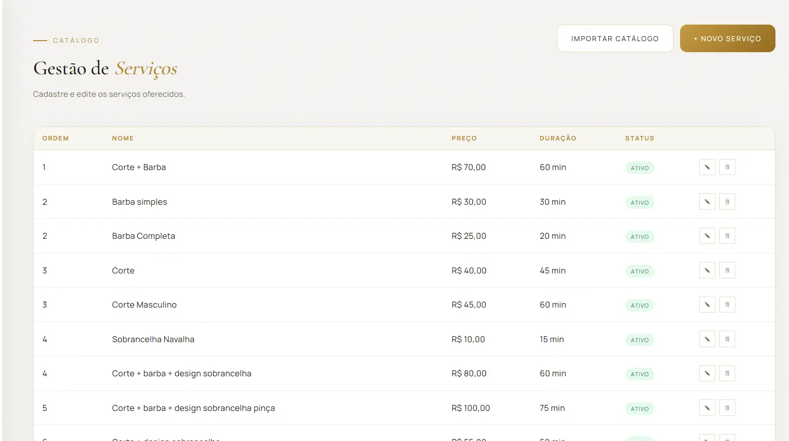
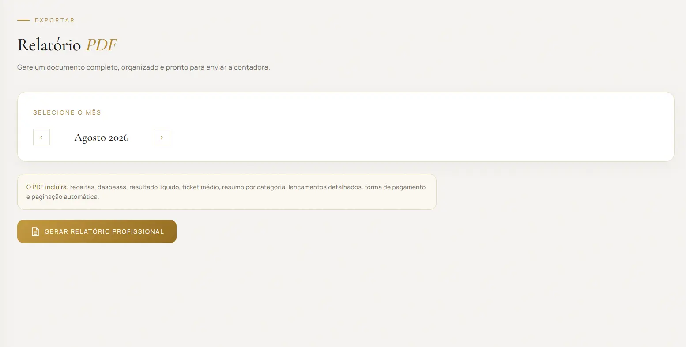
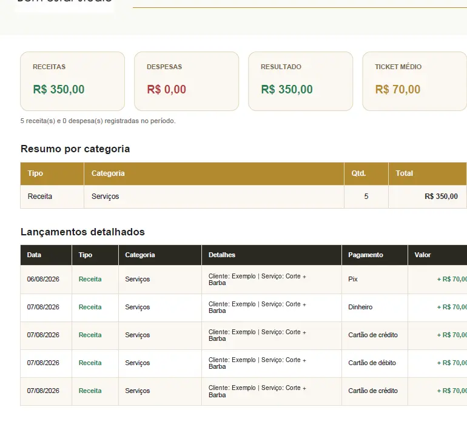

Apresentação do studio
Identidade visual elegante, informações objetivas e acesso direto ao início do agendamento.
Uma solução criada para centralizar agenda, profissionais, serviços, comunicação, finanças e relatórios em uma experiência simples para o cliente e completa para a administração.

O projeto precisava facilitar a escolha de profissional, serviço, data e horário para o cliente, sem perder o controle necessário no dia a dia do studio.
A solução conecta a experiência pública de agendamento a um painel administrativo completo, no qual a equipe acompanha a agenda, atualiza cadastros, visualiza resultados e mantém o cliente informado automaticamente.
O cliente escolhe o profissional e visualiza somente os serviços e horários realmente disponíveis.
Identidade visual elegante, informações objetivas e acesso direto ao início do agendamento.
Primeira etapa organizada para o cliente conhecer e selecionar quem realizará o atendimento.

Catálogo pesquisável com as informações necessárias antes da reserva e horários calculados conforme a duração real do serviço.
Além do agendamento, o site apresenta o ambiente, a proposta do studio e os diferenciais do atendimento.
As telas abaixo utilizam dados demonstrativos ou anonimizados para proteger a privacidade dos clientes.

Visualização por horário, status e duração real do serviço, além da criação de novos agendamentos diretamente pelo painel.

Total de agendamentos, confirmações, clientes aguardando e valor previsto sempre disponíveis no fim da visualização.

Histórico de confirmações, lembretes de 24h e 2h, remarcações e cancelamentos enviados automaticamente.

Cadastro, edição e ativação dos profissionais exibidos para o cliente durante o agendamento.

Serviços configurados com preço, duração, ordem de exibição e status, sem necessidade de alterar o código.

Seleção mensal e geração de documento completo, organizado e pronto para análise ou envio à contabilidade.

Receitas, despesas, resultado líquido, ticket médio, resumo por categoria, formas de pagamento e lançamentos detalhados.